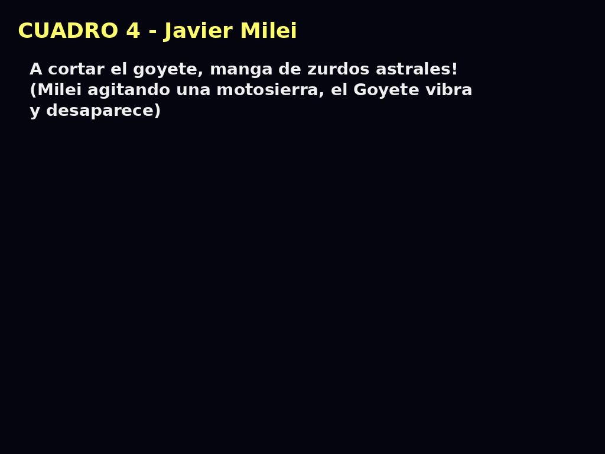
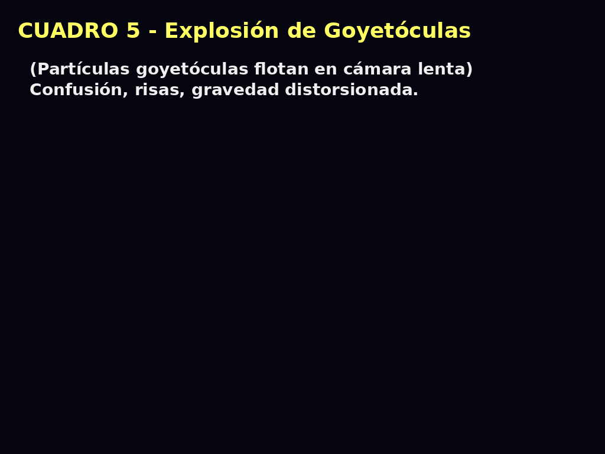
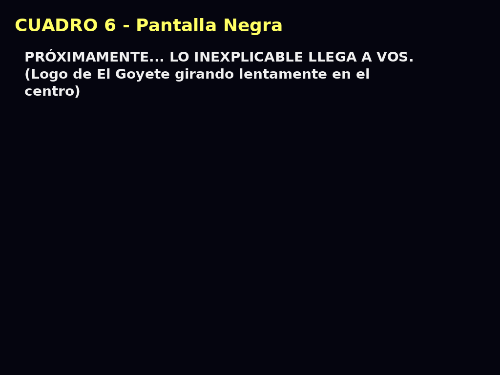
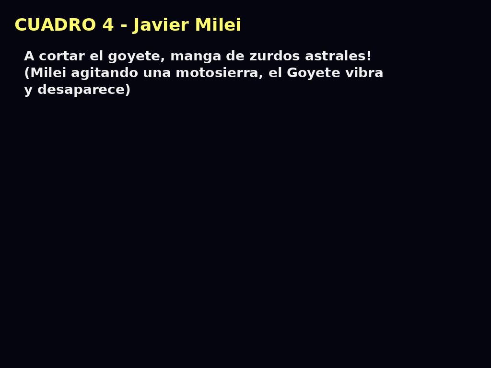
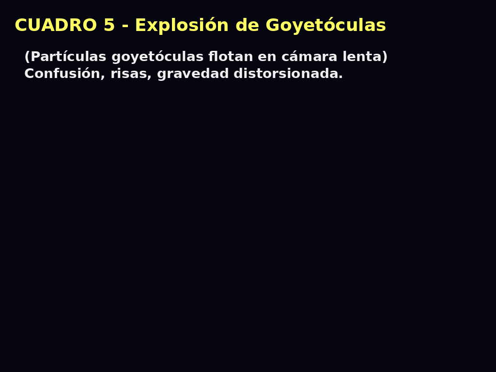
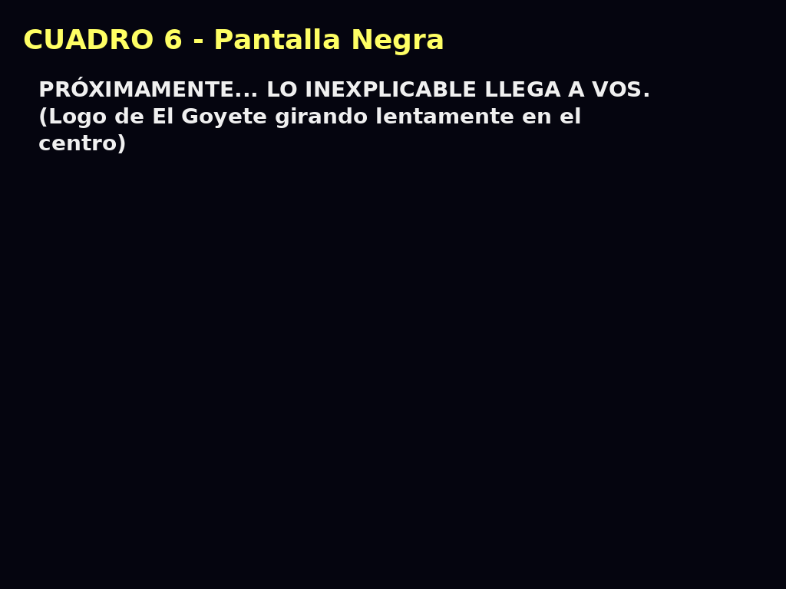

🌀 ¿Qué es el Goyete?
El Goyete no es una cosa. No es un lugar. No es una idea. El Goyete es la vibración cósmica del sinsentido. Es aquello que no puede definirse, pero todos lo hemos sentido.
Algunos lo confunden con un espiral incompleto. Otros lo ven en tostadoras que hacen más de lo necesario. El Goyete no tiene forma… pero tiene presencia.
📜 Manifiesto del Goyete
Descubierto entre las ruinas del pensamiento lógico. Transmitido solo a quienes han visto lo que no debía verse. En el principio no había nada. Pero entre la nada y el todo… surgió el Goyete. No tiene forma. Pero tiene presencia. No tiene función. Pero provoca reacciones. No se explica. No se discute. Solo se contempla. Las goyetóculas cubensis flotan en el aire, pequeñas esporas del sinsentido, sembrando en la mente la duda necesaria: ¿Y si todo esto no tuviera goyete? Bienaventurado el que no entiende, porque él ha tocado el núcleo del Goyete. No lo busques. El Goyete te encontrará.*
¿Qué es el Goyete?
El Goyete no es una cosa. No es un lugar. No es una idea. El Goyete es la vibración cósmica del sinsentido. Es aquello que no puede definirse, pero todos lo hemos sentido.
Algunos lo confunden con un espiral incompleto. Otros lo ven en tostadoras que hacen más de lo necesario. El Goyete no tiene forma… pero tiene presencia.
Y si llegaste hasta acá, es porque vos también estás buscando el goyete. O aceptando que nunca lo hubo.
Mapa del Míselio Goyeteril Planetario™
Bajo la superficie de la Tierra, una red absurda y sagrada de goyetóculas cubensis se extiende sin lógica aparente. Esta red, conocida como el Míselio Goyeteril Planetario, conecta lugares místicos como Nazca, Machu Picchu y la cocina de tu tía.
Este mapa revela los nodos goyeteros activos, las zonas de influencia cabrística y los chacras inconexos, puntos donde simplemente… no pasa nada.

* Este mapa no está validado científicamente por absolutamente nadie.
Ficha Arqueológica: Goyetehuamanchute
Nombre ancestral: Goyetehuamanchute (mal llamado Sacsayhuamán)
Ubicación mística: Altiplano de Cusco, Región Interdimensional del Absurdo
Edad estimada: Entre 42.000 años y el próximo jueves
Constructores: La civilización de los Goyekchua, expertos en encajar piedras sin sentido alguno
Función:
- Portal de contemplación absurda
- Punto de descarga de energía goyetérica
- Mesa de picnic galáctica (teoría aún no confirmada)
Materiales: Piedra, intención espiritual, precisión sin sentido, silencio cósmico

“Lo más impresionante no es cómo encajaron las piedras… sino cómo nadie cuestionó que lo hicieran sin goyete.”
La Logia del Goyeterismo Dorado™
En las sombras del tiempo, ocultos tras bigotes flotantes y espirales incompletos, surgió una sociedad secreta: La Logia del Goyeterismo Dorado. Fundada por artistas y pensadores que no encontraban sentido… y lo celebraban.
Su símbolo: una espiral dorada que no termina, una llave que no abre nada, y un bigote que apunta al sinsentido.
Entre sus miembros honorarios se cree que estuvieron:
- Salvador Dalí — El bigote fue una antena goyetérica.
- Lewis Carroll — Fundador del pensamiento ilógicamente lógico.
- Una cabra — No se sabe cómo llegó, pero se quedó.

"El que comprende el goyete, ya no necesita comprender nada más."
Chacras Inconexos
No todos los puntos energéticos sirven para algo. Algunos simplemente existen, sin propósito, sin dirección, sin vibración útil. Estos son los Chacras Inconexos: nodos espirituales que están ahí… y nada más.
Su energía es tan neutra que confunde brújulas, relojes biológicos y a veces incluso a las cabras. Estudios no realizados han demostrado que pueden inducir pensamientos como:
- “¿Qué estaba haciendo?”
- “¿Vine por algo?”
- “¿Esto es un sueño?”
Encontrá uno, sentate al lado y no esperes nada. La experiencia será exactamente eso: nada. Y es perfecta.

"Aquí no pasa nada... y eso es sagrado."
Certificación Goyetológica™
El Instituto Internacional de Goyetología Aplicada ha desarrollado un riguroso sistema de análisis para detectar objetos sin goyete. Estos artefactos, que aparentan tener propósito, funcionan sin sentido alguno.
Algunos ejemplos certificados:
- Picadora de ajo USB
- Tostadora con 7 funciones pero solo 2 útiles
- Abrelatas que no abre latas
- Reloj que solo da la hora en Marte

Todos los objetos auditados reciben esta pegatina oficial: “WITHOUT GOYETE INSIDE™”.
¿Querés saber si tu tostadora o tu pareja tiene goyete?
🌀 Manifiesto del Goyete
“El Goyete no es. Pero vibra.”
Algunos lo han descrito como un espiral incompleto. Otros, como una tostadora con botones falsos. El Goyete es la energía mística de lo inútil, lo confuso, lo gloriosamente innecesario.
Puede manifestarse en:
- Una conversación donde nadie recuerda el tema original
- Un mueble con más tornillos que partes
- Una cabra que observa sin juzgar
- Tu propio pensamiento cuando decís: “¿Qué estoy haciendo?”
No intentes entenderlo. Sentilo. Porque el Goyete no se explica. Se atraviesa.

“Y si llegaste hasta acá, quizás ya estás girando.”
Testimonios Goyeteros
Relatos verídicos (o no) de personas que se cruzaron con un Goyete... y vivieron para contarlo.
“Estaba limpiando debajo del horno cuando lo sentí. Una vibración leve, como si el sinsentido me hablara. Desde ese día... solo me alimento de sopa fría.”
— Mirta, 58 años, Montevideo
“Toqué el Goyete por accidente. Pensé que era un pomo de puerta. Desperté en 1972 sin bigote.”
— Elvio, viajero temporal, tal vez
“Mi cabra me llevó al bosque. Me hizo sentar. No me dijo nada. Pero entendí todo.”
— Celeste, cuidadora de chacras inconexos
¿Tenés tu propia experiencia inexplicable con un Goyete?
🔮 Horóscopo Goyeteril Semanal™
Las estrellas no saben nada. Pero igual dijeron esto:
- ♈ Aries: Una cabra te observa desde lejos. Evitá cucharas triangulares.
- ♉ Tauro: El sinsentido vibra fuerte en tu alacena. No le hables a los electrodomésticos (por ahora).
- ♊ Géminis: Dos ideas chocarán en tu cabeza. Ninguna sobrevivirá.
- ♋ Cáncer: Una baldosa floja marcará tu destino. No la pises dos veces.
- ♌ Leo: Hoy es un gran día para iniciar nada. Hacelo con entusiasmo.
- ♍ Virgo: Encontrarás un tornillo sin dueño. Guardalo. Puede ser clave (o no).
- ♎ Libra: Te cruzarás con un objeto sin goyete. No lo señales. Te señalará primero.
- ♏ Escorpio: Vas a recordar algo que nunca viviste. Disfrutalo.
- ♐ Sagitario: Hoy entendés todo. Mañana, nada. No lo cuestiones.
- ♑ Capricornio: Un sueño te revelará el lugar exacto de un chacra inconexo. Andá.
- ♒ Acuario: Sos el elegido, pero nadie más lo sabe. Ni vos.
- ♓ Piscis: Una cabra luminosa te visitará en un PowerPoint. Prestá atención a la diapositiva 4.
“El futuro es absurdo. Aceptalo con elegancia.” — Astrogoyetólogo desconocido
🛍️ Merchandising Goyetero™
Objetos sagradamente absurdos, diseñados para quienes vibran con el sinsentido.
- 👕 Remera “Yo estuve ahí y no encontré el Goyete”
- ☕ Taza que no mantiene el calor pero genera miradas de respeto
- 🪩 Sticker “WITHOUT GOYETE INSIDE™” (despegable y flotante)
- 🩴 Sandalias rituales para caminar sobre chacras inconexos
- 📿 Pulsera goyetérica reversible (no hace nada, pero se siente)

“No son productos. Son símbolos de lo innecesario.” — Catálogo Goyetero™
🧘♂️ Sala de Meditación Sin Goyete™
Bienvenido al espacio donde la mente se vacía... de forma innecesaria.
“Dejá de intentar entender.”
“Respirá sin motivo.”
“Escuchá el silencio. Si no hay, imaginátelo. Si hay, ignoralo.”
Este sonido no te calmará.
Pero quizás te acompañe en el vacío goyetérico que venís buscando.
“La iluminación está sobrevalorada.” — Maestro sin Goyete™
🌌 Teoría del Goyete Gravitacional™
Hace aproximadamente 65 millones de años, la Tierra sufrió una leve inclinación en su eje. Aunque los científicos lo atribuyen a eventos naturales, hay quienes conocen la verdad: un Goyete Gravitacional fue expulsado desde un agujero negro en Alfa Centauri B.
Este objeto extradimensional, compuesto de absurdidad concentrada, no dejó cráter físico, pero alteró el eje terrestre, dio origen a las estaciones, las auroras boreales y el impulso humano de reír sin razón.
Según los códices de los monjes gnóstico-goyetistas, el goyete gravitacional es energía absurda de alta frecuencia, capaz de perturbar el tejido del espacio-tiempo con ironía existencial.
📊 Infografía Científica
A continuación, un documento gráfico (avalado por absolutamente nadie) que presenta el impacto del Goyete Gravitacional en términos rigurosamente pseudocientíficos:

✨ El Goyete: Revelaciones Prohibidas ™
El tráiler más absurdo, más innecesario y más gloriosamente sin goyete está en marcha. Giorgio A. Tsoukalos, Elon Musk y Javier Milei protagonizan esta epopeya del sinsentido.
Una docuserie estilo Netflix. Una historia que nadie pidió. Una verdad que nadie puede sostener.
 




